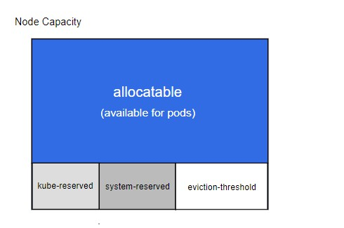

有些应用程序需要额外的存储，但并不关心数据在重启后仍然可用。 例如，缓存服务经常受限于内存大小，将不常用的数据转移到比内存慢、但对总体性能的影响很小的存储中。
另有些应用程序需要以文件形式注入的只读数据，比如配置数据或密钥。
临时卷就是为此类用例设计的。因为卷会遵从 Pod 的生命周期，与Pod一起创建和删除， 所以停止和重新启动Pod时，不会受持久卷在何处可用的限制。
ephemeral-storage是为了管理和调度Kubernetes中运行的应用的短暂存储。在每个Kubernetes的节点上，kubelet的根目录(默认是/var/lib/kubelet)和日志目录(/var/log)保存在节点的主分区上，这个分区同时也会被Pod的EmptyDir类型的volume、容器日志、镜像的层、容器的可写层所占用。ephemeral-storage便是对这块主分区进行管理，通过应用定义的需求(requests)和约束(limits)来调度和管理节点上的应用对主分区的消耗。
在节点上的kubelet启动的时候，kubelet会统计当前节点的主分区的可分配的磁盘资源，或者你可以覆盖节点上kubelet的配置来自定义可分配的资源。在创建Pod时会根据存储需求调度到满足存储的节点，在Pod使用超过限制的存储时会对其做驱逐的处理来保证不会耗尽节点上的磁盘空间。
如果运行时指定了别的独立的分区，比如修改了docker的镜像层和容器可写层的存储位置(默认是/var/lib/docker)所在的分区，将不再将其计入ephemeral-storage的消耗。
节点可用ephemeral-storage k8s的每个节点初始化后，k8s会给节点分配可用的ephemeral-storage
1 2 3 4 5 6 7 8 9 10 11 12 13 14 15 16 17 18 19 20 status : addresses : - address : 172.16 .55.5 type : InternalIP - address : 172.16 .55.5 type : Hostname allocatable : cpu : 3920 m ephemeral-storage : "47438316671" hugepages-1Gi : "0" hugepages-2Mi : "0" memory : 3242724 Ki pods : "253" capacity : cpu : "4" ephemeral-storage : 51473868 Ki hugepages-1Gi : "0" hugepages-2Mi : "0" memory : 3775204 Ki pods : "253"
节点字段里面allocatable和capacity都有ephemeral-storage容量大小配置，这里说明下capacity是指节点所有磁盘空间大小，allocatable是指pod可用的资源容量。
如果你在容器配置的request和limit，那么调度器会看节点的allocatable剩余资源是否满足容器配置要求来判断节点是不是可以满足调度。也就是说，pod的调度是根据allocatable来匹配的。
capacity里面的值是通过如下方式计算得来的

节点的所有资源，减掉系统预留和kube预留的，如果设置了驱逐的话，还要减掉驱逐阈值的那部分。可以参考官网示例说明
这是一个用于说明节点可分配（Node Allocatable）计算方式的示例：
节点拥有 32Gi memeory，16 CPU 和 100Gi Storage 资源 —kube-reserved 被设置为 cpu=1,memory=2Gi,ephemeral-storage=1Gi —system-reserved 被设置为 cpu=500m,memory=1Gi,ephemeral-storage=1Gi —eviction-hard 被设置为 memory.available<500Mi,nodefs.available<10% 在这个场景下，’Allocatable’ 将会是 14.5 CPUs、28.5Gi 内存以及 88Gi 本地存储。 调度器保证这个节点上的所有 Pod 的内存 requests 总量不超过 28.5Gi， 存储不超过 ‘88Gi’。 当 Pod 的内存使用总量超过 28.5Gi 或者磁盘使用总量超过 88Gi 时， kubelet 将会驱逐它们。 如果节点上的所有进程都尽可能多地使用 CPU，则 Pod 加起来不能使用超过 14.5 CPUs 的资源。
当没有执行 kube-reserved 和/或 system-reserved 策略且系统守护进程 使用量超过其预留时，如果节点内存用量高于 31.5Gi 或存储大于 90Gi， kubelet 将会驱逐 Pod。
使用ephemeral-storage 如果没有特殊限制，我们不会配置ephemeral-storage的request和limit，但是如果你的pod存储会持续增长，但是又不想影响到节点其他容器运行，就可以设置下，这样当容器的存储达到limit设置大小后，只有这一个pod就会驱逐重建，而不是整个节点上所有pod都被驱逐。下面我举例说明下
1 2 3 4 5 6 7 8 9 10 11 12 13 14 15 16 17 18 19 20 21 22 23 24 25 26 27 28 29 30 31 32 33 34 35 36 37 38 39 40 41 42 43 44 45 46 47 48 49 50 51 52 53 apiVersion: apps/v1 kind: Deployment metadata: labels: k8s-app: ephemeral-storage-test qcloud-app: ephemeral-storage-test name: ephemeral-storage-test namespace: weixnie spec: progressDeadlineSeconds: 600 replicas: 0 revisionHistoryLimit: 10 selector: matchLabels: k8s-app: ephemeral-storage-test qcloud-app: ephemeral-storage-test strategy: rollingUpdate: maxSurge: 1 maxUnavailable: 0 type: RollingUpdate template: metadata: labels: k8s-app: ephemeral-storage-test qcloud-app: ephemeral-storage-test spec: containers: - args: - while true ; do dd if=/dev/zero of=$(date '+%s' ).out count=1 bs=10MB; sleep 1 ; done command: - sh - -c image: busybox imagePullPolicy: Always name: ephemeral-storage-test resources: limits: ephemeral-storage: 100Mi requests: ephemeral-storage: 100Mi securityContext: privileged: false terminationMessagePath: /dev/termination-log terminationMessagePolicy: File dnsPolicy: ClusterFirst imagePullSecrets: - name: qcloudregistrykey restartPolicy: Always schedulerName: default-scheduler securityContext: {} terminationGracePeriodSeconds: 30
创建一个deployment，然后配置ephemeral-storage最大100Mi，容器内不断生成文件，当达到上限时候，看是否只有这个pod会被驱逐重启
1 2 3 4 5 6 7 8 9 10 11 12 13 14 Events: Type Reason Age From Message ---- ------ ---- ---- ------- Normal Scheduled 21 s default -scheduler Successfully assigned weixnie/ephemeral-storage-test-57 cfd575-hkxl8 to 172.16 .0 .8 Normal Pulling 21 s kubelet Pulling image "busybox" Normal Pulled 21 s kubelet Successfully pulled image "busybox" Normal Created 20 s kubelet Created container ephemeral-storage-test Normal Started 20 s kubelet Started container ephemeral-storage-test Warning Evicted 1 s kubelet Pod ephemeral local storage usage exceeds the total limit of containers 100 Mi. Normal Killing 1 s kubelet Stopping container ephemeral-storage-test [niewx@ VM-0 -4 -centos ~]$ k get pod -A | grep Evi weixnie ephemeral-storage-test-57 cfd575-hkxl8 0 /1 Evicted 0 50 s weixnie ephemeral-storage-test-57 cfd575-nxgd4 0 /1 Evicted 0 29 s
从事件可以看出当容器内存储到100Mi，pod就会重建，然后之前的pod就是被驱逐状态，可以发下只有ephemeral-storage-test被驱逐了，其他pod都是正常的。
欢迎访问 Vashon 的博客，博客和文章在完善中，请大家耐心等待。 若有问题或者有好的建议欢迎留言，笔者看到之后会及时回复。
为正常使用来必力评论功能请激活JavaScript